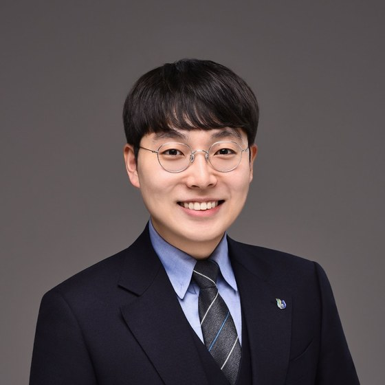

부교수 · Associate Professor약사 · 약학박사 / Pharmacist · Ph.D.제주대학교 약학대학 (약제학 · 의약품제조관리학)College of Pharmacy, Jeju National University (Pharmaceutics · Pharmaceutical Manufacturing)
제주약학연구소 소장Director, Jeju Research Institute of Pharmaceutical Sciences (RIPS)신약연구개발지원센터 · Center for Drug Research & Development Support
chpark@jejunu.ac.kr · 064-754-2652
Google Scholar · ORCID
Fattigation-platform 기술 · 가용화/안정화/나노화 제제 개발 · 선택적 방출제어 및 고온용융압출 · 생체모사 미세유체 시스템 · 재조합 알부민 기반 정밀 나노전달 · 천연물 추출 및 제형 개발
Fattigation-platform technology · Solubilization, stabilization and nanosizing · Controlled release and hot-melt extrusion · Biomimetic microfluidic systems · Recombinant albumin-based precision nanodelivery · Natural product extraction and formulation
지방산 매개 미세개질 재조합 알부민 구조체 라이브러리 기반 난용성 키나아제 저해제 정밀 나노전달 플랫폼 개발
과학기술정보통신부 · 한국연구재단 | 개인기초연구 우수연구-핵심연구(기본연구B)
RS-2026-25603537 | 2026.09.01 – 2031.08.31 (5년) | 연구책임자